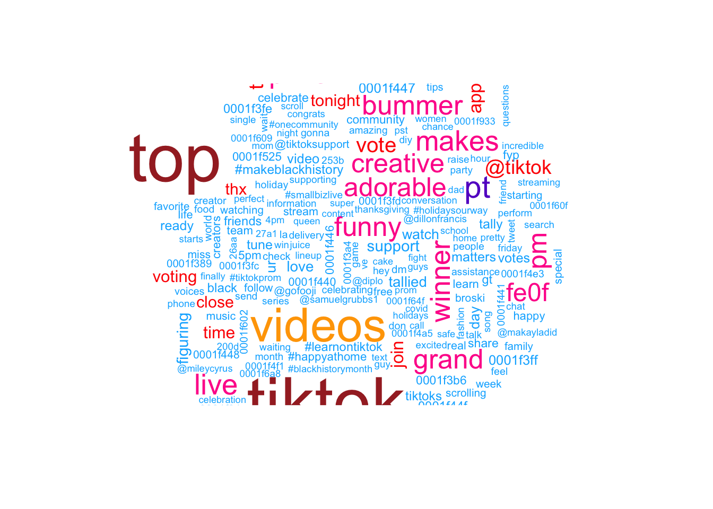

Homework 9 - Sentiment Analysis
Kim Nguyen
4/24/2021
I. Introduction
Social media has been evolved and affected our lives in many aspects. In this assignment, we aim to have a closer look at the two most popular social media platforms: Tiktok and Facebook. These platforms are in a similar industry but with very different target audiences, thus the two brands and their audiences could differ in their communication styles and language. Understanding the language used in these platforms may lead to their business implications and directions.
Our research question focuses on whether there are differences in sentiments of tweet communications between Tiktok and Facebook account.
II. Methodology
Our method of sentiments analysis is text mining with R.
First, after getting tweets from twitter, we use basic tools of data exploration to transform, visualize, and examine different features of the datasets, such as source, time, length, and content (e.g, link and picture) of the tweets. We produce bar charts to visualize the most popular words used by each twitter account, as well as the most popular sentiments associated with tweets that each account produces. A wordcloud also helps paint a clearer picture of each company’s most commonly used words.
Second, we transform the datasets into tidy text format for sentiment analysis. The two main lexicons that we use are nrc and affin.
Finally, we run 4 different models to predict if a tweet was posted by either Facebook or Tiktok. The inputs of these models are the length of the tweet, as well as sentiment (which includes anger, anticipation, disgust, negative, postive, trust, joy, surprise, fear and sadness).
The first model is a Simple Decision Tree, the second model is a Bagging Model, the third model is a Random Forest and the fourth model is a Gradient Boosting Model.
Our results include a sum of squares analysis on the test set of data to determine which models have the smallest differences between the predicted tweeter and actual tweeter. We also include confusion matrices on the test set of data to analyze the prediction accuracy of the 4 models.
#Loading packages.
library(rtweet)
library(tidyverse)
library(lubridate)
library(scales)
library(tidytext)
library(wordcloud)
library(textdata)
library(caret) # for general model fitting
library(rpart) # for fitting decision trees
library(rpart.plot)
library(ipred) # for fitting bagged decision trees
library(ranger)
library(gbm)
library(vip)The 2 datasets: Tiktok vs. Facebook
#Getting tweets
# Run these two lines to get the tweets
# and then save them as a csv for future use
# tiktok <- get_timeline("tiktok_us", n=3200)
# tiktok %>% write_as_csv('tiktok.csv')
#
# facebook <- get_timeline("Facebook", n=3200)
# facebook %>% write_as_csv("facebook.csv")
tiktok <-
read_csv('tiktok.csv') %>%
select(status_id, source, text, created_at)
facebook <-
read_csv('facebook.csv') %>%
select(status_id, source, text, created_at)
get_sentiments("nrc") -> nrc
facebook %>% head()## # A tibble: 6 x 4
## status_id source text created_at
## <chr> <chr> <chr> <dttm>
## 1 x138202008034… Twitter … "Ramadan Mubarak <U+0001F319>\n … 2021-04-13 17:17:18
## 2 x138173442901… Khoros CX "@MeenalK1 Hi Meenal. Do you hav… 2021-04-12 22:22:13
## 3 x138173338263… Khoros CX "@Afrojalipro Thanks for updatin… 2021-04-12 22:18:04
## 4 x138173266838… Khoros CX "@CallandManning Hi Calland. If … 2021-04-12 22:15:14
## 5 x138171137687… Khoros CX "@BHARTINANDAN4 Hello! Please vi… 2021-04-12 20:50:37
## 6 x138171054847… Khoros CX "@weathermatt22 Hi Matt. Please … 2021-04-12 20:47:20Each dataset has around 3200 tweets.
Content comparison: tweeting time
facebook %>%
count(source, hour = hour(with_tz(created_at, "EST"))) %>%
mutate(percent = n/sum(n)) %>%
ggplot(aes(x = hour, y = percent, color = source)) +
labs(x = "Hour of day (EST)", y = "% of tweets", color = "") +
scale_y_continuous(labels = percent_format()) +
geom_line() +
ggtitle('Facebook Source Breakdown by Hour')tiktok %>%
count(source, hour = hour(with_tz(created_at, "EST"))) %>%
mutate(percent = n/sum(n)) %>%
ggplot(aes(x = hour, y = percent, color = source)) +
labs(x = "Hour of day (EST)", y = "% of tweets", color = "") +
scale_y_continuous(labels = percent_format()) +
geom_line() +
ggtitle('Tiktok Source Breakdown by Hour')
These above figures indicate Tiktok/Facebook breakdown by hour. Across sources, the “busiest” time on both platforms are from 12:00 to 20:00. While Khoros Publishing has the most tweets about Facebook with its peak around 16:00, Twitter Web App and Fan Experiences (peaks around 16:00) are the main source of tweets about Tiktok.
Content comparison: tweet length
fb_wordcounts <-
facebook %>%
mutate(tweetLength = str_length(text)) %>%
filter(tweetLength < 500)
tiktok_wordcounts <-
tiktok %>%
mutate(tweetLength = str_length(text)) %>%
filter(tweetLength < 500)
writeLines(c(paste0("Facebook Mean Tweet Length: ",
mean(fb_wordcounts$tweetLength)),
paste0("TikTok Mean Tweet Length: ",
mean(tiktok_wordcounts$tweetLength))))## Facebook Mean Tweet Length: 163.289555972483
## TikTok Mean Tweet Length: 112.557921102066hist(tiktok_wordcounts$tweetLength)hist(fb_wordcounts$tweetLength)In terms of tweet length, a typical tweet related to Tiktok has from 50 to 100 words. There are less tweets that has more than 100 words. A typical tweet related to Facebook has around 150 words.
Content comparison: picture/link
fb_picture_counts <-
facebook %>%
filter(!str_detect(text, '^"')) %>%
count(picture = ifelse(str_detect(text, "t.co"),
"Picture/link", "No picture/link"))
tiktok_picture_counts <-
tiktok %>%
filter(!str_detect(text, '^"')) %>%
count(picture = ifelse(str_detect(text, "t.co"),
"Picture/link", "No picture/link"))
barplot(fb_picture_counts$n,
names.arg=c("No picture/link", "Picture/link"),
main = "Facebook # of Tweets with and without pics/link")barplot(tiktok_picture_counts$n,
names.arg=c("No picture/link", "Picture/link"),
main = "Tiktok # of Tweets with and without pics/link")fb_pct_pics <-
fb_picture_counts %>% filter(picture == "Picture/link") %>%
select(2) %>% as.numeric() / sum(fb_picture_counts$n) * 100
tiktok_pct_pics <-
tiktok_picture_counts %>% filter(picture == "Picture/link") %>%
select(2) %>% as.numeric() / sum(tiktok_picture_counts$n) * 100
cat(paste0("Percent of Tweets with pictures/link\n",
"\nFacebook: ", round(fb_pct_pics, 2),
"\nTikTok: ", round(tiktok_pct_pics, 2)))## Percent of Tweets with pictures/link
##
## Facebook: 85.98
## TikTok: 52.33Facebook tweets that contains pictures or links are more common than ones that have no pictures or links. There are no remarakble differences between tweets that contain picture/link and ones that don’t contains picture/link from Tiktok. Specifically, 86% of Facebook’s tweets contain pictures/links, while only around 52% of TikTok’s tweets contain pictures/links. This could be another useful predictor to include in our model.
Sentiment Analysis
reg <- "([^A-Za-z\\d#@']|'(?![A-Za-z\\d#@]))"
# Unnest the text strings into a data frame of words
fb_words <-
facebook %>%
filter(!str_detect(text, '^"')) %>%
mutate(text = str_replace_all(text,
"https://t.co/[A-Za-z\\d]+|&",
"")) %>%
unnest_tokens(word, text,
token = "regex",
pattern = reg) %>%
filter(!word %in% stop_words$word,
str_detect(word, "[a-z]"))
tiktok_words <-
tiktok %>%
filter(!str_detect(text, '^"')) %>%
mutate(text = str_replace_all(text,
"https://t.co/[A-Za-z\\d]+|&",
"")) %>%
unnest_tokens(word, text,
token = "regex",
pattern = reg) %>%
filter(!word %in% stop_words$word,
str_detect(word, "[a-z]"))
# Inspect the first six rows of tweet_words
head(fb_words)## # A tibble: 6 x 4
## status_id source created_at word
## <chr> <chr> <dttm> <chr>
## 1 x1382020080343470082 Twitter Web App 2021-04-13 17:17:18 ramadan
## 2 x1382020080343470082 Twitter Web App 2021-04-13 17:17:18 mubarak
## 3 x1382020080343470082 Twitter Web App 2021-04-13 17:17:18 0001f319
## 4 x1382020080343470082 Twitter Web App 2021-04-13 17:17:18 #monthofgood
## 5 x1382020080343470082 Twitter Web App 2021-04-13 17:17:18 check
## 6 x1382020080343470082 Twitter Web App 2021-04-13 17:17:18 kindnessOcuurrences
fb_words %>%
count(word, sort = TRUE) %>%
head(20) %>%
mutate(word = reorder(word, n)) %>%
ggplot(aes(x = word, y = n)) +
geom_bar(stat = "identity") +
ylab("Occurrences") +
coord_flip()tiktok_words %>%
count(word, sort = TRUE) %>%
head(20) %>%
mutate(word = reorder(word, n)) %>%
ggplot(aes(x = word, y = n)) +
geom_bar(stat = "identity") +
ylab("Occurrences") +
coord_flip()fb_sentiment <-
inner_join(fb_words, nrc, by = "word") %>%
group_by(sentiment)
tiktok_sentiment <-
inner_join(tiktok_words, nrc, by = "word") %>%
group_by(sentiment)
fb_words %>% head()## # A tibble: 6 x 4
## status_id source created_at word
## <chr> <chr> <dttm> <chr>
## 1 x1382020080343470082 Twitter Web App 2021-04-13 17:17:18 ramadan
## 2 x1382020080343470082 Twitter Web App 2021-04-13 17:17:18 mubarak
## 3 x1382020080343470082 Twitter Web App 2021-04-13 17:17:18 0001f319
## 4 x1382020080343470082 Twitter Web App 2021-04-13 17:17:18 #monthofgood
## 5 x1382020080343470082 Twitter Web App 2021-04-13 17:17:18 check
## 6 x1382020080343470082 Twitter Web App 2021-04-13 17:17:18 kindnessFacebook vs. Tiktok sentiment
fb_sentiment_analysis <- fb_sentiment %>%
count(word, sentiment) %>%
group_by(sentiment)
fb_sentiment_analysis %>%
top_n(15) %>%
ggplot(aes(x = sentiment, y = n )) +
geom_bar(stat = "identity") +
coord_flip() +
ylab("Frequency") +
xlab("Sentiment") +
labs(title="Facebook Sentiment")## Selecting by n
tiktok_sentiment_analysis <- tiktok_sentiment %>%
count(word, sentiment) %>%
group_by(sentiment)
tiktok_sentiment_analysis %>%
top_n(15) %>%
ggplot(aes(x = sentiment, y = n )) +
geom_bar(stat = "identity") +
coord_flip() +
ylab("Frequency") +
xlab("Sentiment") +
labs(title="TikTok Sentiment")## Selecting by nfb_sentiment_analysis %>% filter(!sentiment %in% c("positive", "negative")) %>%
mutate(sentiment = reorder(sentiment, -n),
word = reorder(word, -n)) %>% top_n(10) -> fb_sentiment_analysis2## Selecting by nggplot(fb_sentiment_analysis2, aes(x=word, y=n, fill = n)) +
facet_wrap(~ sentiment, scales = "free")+
geom_bar(stat ="identity") +
theme(axis.text.x = element_text(angle = 90, hjust = 1)) +
labs(y="count", title="Facebook Sentiment")tiktok_sentiment_analysis %>% filter(!sentiment %in% c("positive", "negative")) %>%
mutate(sentiment = reorder(sentiment, -n),
word = reorder(word, -n)) %>% top_n(10) -> tiktok_sentiment_analysis2## Selecting by nggplot(tiktok_sentiment_analysis2, aes(x=word, y=n, fill = n)) +
facet_wrap(~ sentiment, scales = "free")+
geom_bar(stat ="identity") +
theme(axis.text.x = element_text(angle = 90, hjust = 1)) +
labs(y="count", title="Tik Tok Sentiment")We compare the sentiment between Facebook and TikTok. It looks like discussions surrounding Facebook uses more trust words while topics about TikTok uses more words that reflect anticipation.
Word Cloud
facebook_cloud <- fb_words %>% count(word) %>% arrange(-n)
wordcloud(facebook_cloud$word, facebook_cloud$n, max.words = 200, colors = c("#00B2FF", "red", "#FF0099", "#6600CC", "green", "orange", "blue", "brown"))tiktok_cloud <- tiktok_words %>% count(word) %>% arrange(-n)
wordcloud(tiktok_cloud$word, tiktok_cloud$n, max.words = 200, colors = c("#00B2FF", "red", "#FF0099", "#6600CC", "green", "orange", "blue", "brown"))
We also want to visualize common words on Facebook and Tiktok by Wordcloud. The visual depiction indicates to us that “learn”, “center” and “report” are common words, with more secondary common words such as “secure” page“, and”visit" for Facebook account engagement. This could be that Facebook users tweet about account issues. Whereas, TikTok has “top”, “tomorrow”, and “prizes” as common words, and more secondary common words such as “winner,”nominating“, and”grand", indicating that the social media platform likes to promote competitions or giveaways, which makes sense given their younger demographics might enjoy these types of rewards and games.
Positive-negative score
Next, we examine texts on Facebook and Tiktok to see their positive-negative score by using afinn lexicon
# run this to get afinn lexicon and save it as a csv
# get_sentiments ("afinn") -> afinn
#
#afinn %>% write_as_csv("afinn.csv")
get_sentiments("afinn") -> afinnfb_afinn <-
inner_join(fb_words, afinn, by = "word")
tiktok_afinn <-
inner_join(tiktok_words, afinn, by = "word")
fb_afinn %>% summarise(mean_fb_afinn = mean(value))## # A tibble: 1 x 1
## mean_fb_afinn
## <dbl>
## 1 0.785tiktok_afinn %>% summarise(mean_tt_afinn = mean(value))## # A tibble: 1 x 1
## mean_tt_afinn
## <dbl>
## 1 1.70Mean of Facebook’s afinn value is 0.79 while mean of Tiktok’s afinn value is 1.704293. In general, tweets from Tiktok are more positive than those on Facebook.
##Training Predictive Models
Here, using the text of a tweet, we attempt to predict the user who tweeted it.
The features we extracted are tweet length, the presence of a picture/link, number of words for each sentiment, and mean AFINN score per tweet.
TikTok is encoded as 1, and Facebook is encoded as 0.
First, we produce a simple decision tree.
fb_piclinks <-
facebook %>%
filter(!str_detect(text, '^"')) %>%
mutate(picture_link = ifelse(str_detect(text, "t.co"),
1, 0)) %>%
select(1,5)
tiktok_piclinks <-
tiktok %>%
filter(!str_detect(text, '^"')) %>%
mutate(picture_link = ifelse(str_detect(text, "t.co"),
1, 0)) %>%
select(1,5)
fb_tweet_afinn <-
fb_afinn %>%
group_by(status_id) %>%
summarize(afinn = mean(value))## `summarise()` ungrouping output (override with `.groups` argument)tiktok_tweet_afinn <-
tiktok_afinn %>%
group_by(status_id) %>%
summarize(afinn = mean(value))## `summarise()` ungrouping output (override with `.groups` argument)fb_sentiment_counts <-
fb_sentiment %>%
group_by(status_id) %>%
count(sentiment) %>%
pivot_wider(id_cols = status_id,
names_from = sentiment,
values_from = n,
values_fill = 0)
tiktok_sentiment_counts <-
tiktok_sentiment %>%
group_by(status_id) %>%
count(sentiment) %>%
pivot_wider(id_cols = status_id,
names_from = sentiment,
values_from = n,
values_fill = 0)
tiktok_feature_selection <-
tiktok_wordcounts %>%
mutate(user = 1) %>%
left_join(tiktok_sentiment_counts,
by="status_id") %>%
left_join(tiktok_tweet_afinn,
by="status_id") %>%
left_join(tiktok_piclinks,
by="status_id")
facebook_feature_selection <-
fb_wordcounts %>%
mutate(user = 0) %>%
left_join(fb_sentiment_counts,
by="status_id") %>%
left_join(fb_tweet_afinn,
by="status_id") %>%
left_join(fb_piclinks,
by="status_id")
both_users <-
tiktok_feature_selection %>%
rbind(facebook_feature_selection) %>%
mutate_if(is.numeric,coalesce,0)
set.seed(123)
index <-
createDataPartition(both_users$user,
p = 0.8, list = FALSE)
for_decisiontree <-
both_users %>% select(-1,-2,-3,-4) %>%
drop_na()
train <- for_decisiontree[index, ]## Warning: The `i` argument of ``[`()` can't be a matrix as of tibble 3.0.0.
## Convert to a vector.
## This warning is displayed once every 8 hours.
## Call `lifecycle::last_warnings()` to see where this warning was generated.test <- for_decisiontree[-index, ]
set.seed(123)
simple_model <- rpart(user ~ .,
data = train, method = "class")
rpart.plot(simple_model, yesno = 2)Interpretation of decision tree: If a tweet has less than 94 words, it is projected to be from Tiktok account, with 87% probability, and 26% of the data correspond with this case. In another case, if a tweet has more than/or equal 94 words, 37% chance that it is related to Facebook, with 71% data correspondence. Within this case, if it contains a picture or a link, 21% this tweet is from Facebook with 52% data correspondence. However, if it does not contain any picture or link, it 83% it’s Tiktok’s tweet (18% data correspondence).
We produce additional models using the bagging, random forests, and gradient boosting methods.
set.seed(123)
bagging_model <- train(
user ~ .,
data = train,
method = "treebag",
trControl = trainControl(method = "oob"),
keepX = T,
nbagg = 100,
importance = "impurity",
control = rpart.control(minsplit = 2, cp = 0))
bagging_model## Bagged CART
##
## 5114 samples
## 13 predictor
##
## No pre-processing
## Resampling results:
##
## RMSE Rsquared
## 0.4220165 0.4031074n_features <- length(setdiff(names(train), "user"))
rf_model <- ranger(
user ~ .,
data = train,
mtry = floor(n_features * 0.5),
respect.unordered.factors = "order",
importance = "permutation",
seed = 123)
rf_model## Ranger result
##
## Call:
## ranger(user ~ ., data = train, mtry = floor(n_features * 0.5), respect.unordered.factors = "order", importance = "permutation", seed = 123)
##
## Type: Regression
## Number of trees: 500
## Sample size: 5114
## Number of independent variables: 13
## Mtry: 6
## Target node size: 5
## Variable importance mode: permutation
## Splitrule: variance
## OOB prediction error (MSE): 0.0994573
## R squared (OOB): 0.6022425set.seed(123) # for reproducibility
gbm_model <- gbm(
formula = user ~ .,
data = train,
distribution = "gaussian", # SSE loss function
n.trees = 1000,
shrinkage = 0.05,
interaction.depth = 5,
n.minobsinnode = 4,
cv.folds = 10)
gbm_model## gbm(formula = user ~ ., distribution = "gaussian", data = train,
## n.trees = 1000, interaction.depth = 5, n.minobsinnode = 4,
## shrinkage = 0.05, cv.folds = 10)
## A gradient boosted model with gaussian loss function.
## 1000 iterations were performed.
## The best cross-validation iteration was 979.
## There were 13 predictors of which 13 had non-zero influence.We also display four variable importance plots to see which variables each model identified as significant.
vip(simple_model, num_features = 30) + ggtitle('Simple Decision Tree - Variable Importance Plot')vip(bagging_model, num_features = 30) + ggtitle('Bagging - Variable Importance Plot')vip(rf_model, num_features = 30) + ggtitle('Random Forests - Variable Importance Plot')vip(gbm_model, num_features = 30) + ggtitle('Gradient Boosting - Variable Importance Plot')It seems that the simple decision tree placed the most importance on the presence of a picture/link. The bagging model, on the other hand places no importance on this variable. All four methods identified tweet length as strongly predictive of the user. All four heavily weighted anticipation sentiments and AFINN scores.
III.Results and Discussion
Confusion matrices and residual sum of squares for all tree-based methods—first evaluating their performance on the training set and then on the test set. Note again that a Tiktok tweet is encoded as 1, and a Facebook tweet is encoded as 0. The code is shown for the first matrix but not for subsequent ones for the sake of elegance.
Training Set Performance
Simple Decision Tree - Training Set:
## Confusion Matrix and Statistics
##
## Reference
## Prediction 0 1
## 0 2209 574
## 1 338 1993
##
## Accuracy : 0.8217
## 95% CI : (0.8109, 0.8321)
## No Information Rate : 0.502
## P-Value [Acc > NIR] : < 2.2e-16
##
## Kappa : 0.6435
##
## Mcnemar's Test P-Value : 7.16e-15
##
## Precision : 0.7937
## Recall : 0.8673
## F1 : 0.8289
## Prevalence : 0.4980
## Detection Rate : 0.4320
## Detection Prevalence : 0.5442
## Balanced Accuracy : 0.8218
##
## 'Positive' Class : 0
## Bagging Method - Training Set:
## Confusion Matrix and Statistics
##
## Reference
## Prediction 0 1
## 0 2462 59
## 1 85 2508
##
## Accuracy : 0.9718
## 95% CI : (0.9669, 0.9762)
## No Information Rate : 0.502
## P-Value [Acc > NIR] : < 2e-16
##
## Kappa : 0.9437
##
## Mcnemar's Test P-Value : 0.03722
##
## Precision : 0.9766
## Recall : 0.9666
## F1 : 0.9716
## Prevalence : 0.4980
## Detection Rate : 0.4814
## Detection Prevalence : 0.4930
## Balanced Accuracy : 0.9718
##
## 'Positive' Class : 0
## Random Forests Method - Training Set:
## Confusion Matrix and Statistics
##
## Reference
## Prediction 0 1
## 0 2418 102
## 1 129 2465
##
## Accuracy : 0.9548
## 95% CI : (0.9488, 0.9604)
## No Information Rate : 0.502
## P-Value [Acc > NIR] : < 2e-16
##
## Kappa : 0.9097
##
## Mcnemar's Test P-Value : 0.08714
##
## Precision : 0.9595
## Recall : 0.9494
## F1 : 0.9544
## Prevalence : 0.4980
## Detection Rate : 0.4728
## Detection Prevalence : 0.4928
## Balanced Accuracy : 0.9548
##
## 'Positive' Class : 0
## Gradient Boosting Method - Training Set:
## Using 979 trees...## Confusion Matrix and Statistics
##
## Reference
## Prediction 0 1
## 0 2311 282
## 1 236 2285
##
## Accuracy : 0.8987
## 95% CI : (0.8901, 0.9068)
## No Information Rate : 0.502
## P-Value [Acc > NIR] : < 2e-16
##
## Kappa : 0.7974
##
## Mcnemar's Test P-Value : 0.04802
##
## Precision : 0.8912
## Recall : 0.9073
## F1 : 0.8992
## Prevalence : 0.4980
## Detection Rate : 0.4519
## Detection Prevalence : 0.5070
## Balanced Accuracy : 0.8987
##
## 'Positive' Class : 0
## Performance Summary and RSS
## type total_errors accuracy
## 1 Simple 912 0.8216660
## 2 Bagging 144 0.9718420
## 3 Random Forests 231 0.9548299
## 4 Gradient Boosting 518 0.8987094The rankings for accuracy on the training set are as follows: 1. Bagging method 2. Random forests 3. Gradient boosting method 4. Simple decision tree
The residual sum of squares for all four models on the training set below.
rss_simple_train <- sum((actual_train-simple_pred_train)^2)
rss_bagging_train <- sum((actual_train-bagging_pred_train)^2)
rss_rf_train <- sum((actual_train-rf_pred_train)^2)
rss_gb_train <- sum((actual_train-gb_pred_train)^2)
cat(paste0("Residual Sum of Squares on Training Set\n",
"\nSimple model: ", rss_simple_train,
"\nBagging model: ", rss_bagging_train,
"\nRandom forests model: ", rss_rf_train,
"\nGradient boosting model: ", rss_gb_train))## Residual Sum of Squares on Training Set
##
## Simple model: 743.785102129366
## Bagging model: 147.807476444236
## Random forests model: 227.098526515841
## Gradient boosting model: 390.0864919704The bagging model performed the best on the training set, followed by the random forests method, the gradient boosting method, and the simple model in last place.
Confusion matrices for the test set.
Test Set Performance
Simple Decision Tree - Test Set:
actual_test <- test$user
simple_pred_test <-
predict(simple_model, newdata = test) %>%
as_tibble() %>%
select(2) %>%
unlist() %>%
as.vector()
simple_test_confusion <-
confusionMatrix(data = factor(round(simple_pred_test)),
reference = factor(actual_test), mode = "prec_recall")
simple_test_errors <-
simple_test_confusion$table[2] +
simple_test_confusion$table[3]
simple_test_accuracy <-
as.numeric(simple_test_confusion$overall[1])
simple_test_confusion## Confusion Matrix and Statistics
##
## Reference
## Prediction 0 1
## 0 563 135
## 1 88 492
##
## Accuracy : 0.8255
## 95% CI : (0.8036, 0.8459)
## No Information Rate : 0.5094
## P-Value [Acc > NIR] : < 2.2e-16
##
## Kappa : 0.6504
##
## Mcnemar's Test P-Value : 0.002067
##
## Precision : 0.8066
## Recall : 0.8648
## F1 : 0.8347
## Prevalence : 0.5094
## Detection Rate : 0.4405
## Detection Prevalence : 0.5462
## Balanced Accuracy : 0.8248
##
## 'Positive' Class : 0
## Bagging Method - Test Set:
## Confusion Matrix and Statistics
##
## Reference
## Prediction 0 1
## 0 550 102
## 1 101 525
##
## Accuracy : 0.8412
## 95% CI : (0.8199, 0.8608)
## No Information Rate : 0.5094
## P-Value [Acc > NIR] : <2e-16
##
## Kappa : 0.6822
##
## Mcnemar's Test P-Value : 1
##
## Precision : 0.8436
## Recall : 0.8449
## F1 : 0.8442
## Prevalence : 0.5094
## Detection Rate : 0.4304
## Detection Prevalence : 0.5102
## Balanced Accuracy : 0.8411
##
## 'Positive' Class : 0
## Random Forests Method - Test Set:
## Confusion Matrix and Statistics
##
## Reference
## Prediction 0 1
## 0 569 90
## 1 82 537
##
## Accuracy : 0.8654
## 95% CI : (0.8455, 0.8837)
## No Information Rate : 0.5094
## P-Value [Acc > NIR] : <2e-16
##
## Kappa : 0.7307
##
## Mcnemar's Test P-Value : 0.5935
##
## Precision : 0.8634
## Recall : 0.8740
## F1 : 0.8687
## Prevalence : 0.5094
## Detection Rate : 0.4452
## Detection Prevalence : 0.5156
## Balanced Accuracy : 0.8652
##
## 'Positive' Class : 0
## Gradient Boosting Method - Test Set:
## Using 979 trees...## Confusion Matrix and Statistics
##
## Reference
## Prediction 0 1
## 0 569 84
## 1 82 543
##
## Accuracy : 0.8701
## 95% CI : (0.8504, 0.8881)
## No Information Rate : 0.5094
## P-Value [Acc > NIR] : <2e-16
##
## Kappa : 0.7401
##
## Mcnemar's Test P-Value : 0.9381
##
## Precision : 0.8714
## Recall : 0.8740
## F1 : 0.8727
## Prevalence : 0.5094
## Detection Rate : 0.4452
## Detection Prevalence : 0.5110
## Balanced Accuracy : 0.8700
##
## 'Positive' Class : 0
## Performance Summary and RSS
## type total_errors accuracy
## 1 Simple 223 0.8255086
## 2 Bagging 203 0.8411581
## 3 Random Forests 172 0.8654147
## 4 Gradient Boosting 166 0.8701095The rankings for accuracy on the test set are as follows:
- Random forests
- Gradient boosting method
- Bagging method
- Simple decision tree
Now, we show the residual sum of squares for each model with respect to the test set.
rss_simple_test <- sum((actual_test-simple_pred_test)^2)
rss_bagging_test <- sum((actual_test-bagging_pred_test)^2)
rss_rf_test <- sum((actual_test-rf_pred_test)^2)
rss_gb_test <- sum((actual_test-gb_pred_test)^2)
cat(paste0("Residual Sum of Squares on Test Set\n",
"\nSimple model: ", rss_simple_test,
"\nBagged model: ", rss_bagging_test,
"\nRandom forests model: ", rss_rf_test,
"\nGradient boost model: ", rss_gb_test))## Residual Sum of Squares on Test Set
##
## Simple model: 183.394951302835
## Bagged model: 139.545475352265
## Random forests model: 121.74139561547
## Gradient boost model: 131.566142920475The random forests model performed the best on the test set even though it was only second best for the training set. However, that may be an indication that the bagging model was overfit to the training data, which caused it to perform worse on the test set than the random forests model.
In sum, it seems that the best model is the random forests model, with a test set accuracy score of 86.62%.
IV. Conclusion
Looking at the analyses, it seems that the Facebook and TikTok accounts have systematically different Twitter presences. Facebook seems to respond more frequently to user fears, which are associated with words such as “secure” and “trust.” Whereas, TikTok focuses on generating excitement and offer prize giveaways, which is associated with “anticipation” words such as “winning” and “tomorrow.” Differences in tweet length also possibly reflect on the preferences of the target audience; TikTok users are younger and less likely to consume written information (it is a video platform, after all), and the opposite is true for Facebook. In sum, our predictive endeavor was successful, and we unveiled a number of useful insights from it.
V. Contributions
Ammar Plumber, Elaina Lin, Kim Nguyen, Meghan Aines, Ryan Karbowicz